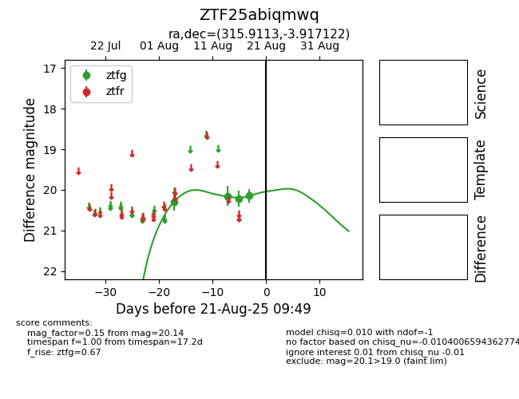

Target ZTF25abiqmwq at 2025-08-21 09:49, see:
FINK: fink-portal.org/ZTF25abiqmwq
Lasair: lasair-ztf.lsst.ac.uk/objects/ZTF25abiqmwq
ALeRCE: alerce.online/object/ZTF25abiqmwq
alt names
ZTF25abiqmwq (ztf,alerce)
coordinates:
equatorial (ra, dec) = (315.9113,-3.91712)
galactic (l, b) = (45.5577,-31.02503)
photometry
last ztfg=20.14
4 ztfg detections
